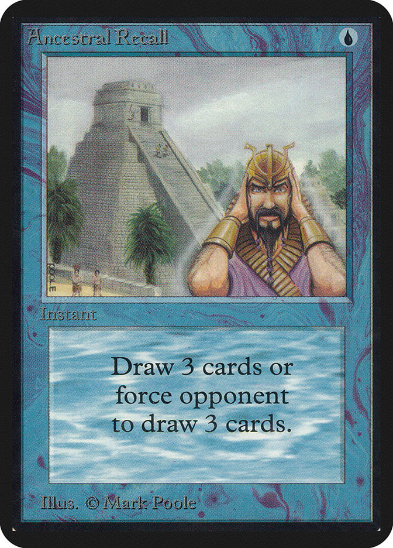

Magic: The Gathering
Il gioco che ha inventato un intero genere — dal 1993, il benchmark di ogni carte da collezione
Il pioniere che ha cambiato tutto
Richard Garfield e Wizards of the Coast hanno inventato il concetto stesso di "trading card game" nel 1993 con la pubblicazione della Limited Edition Alpha. Prima di Magic non esisteva nulla di simile: un gioco competitivo dove i giocatori costruiscono il proprio mazzo da una collezione in continua espansione.
La cornice cromatica (bianco, blu, nero, rosso, verde) è diventata un sistema di design talmente efficace da essere studiato nelle scuole di design di gioco. Ogni colore ha una filosofia, una meccanica e un'estetica riconoscibili in pochi secondi.
Le nove carte del "Power Nine" — Black Lotus, i Mox e altre — sono considerate i Stradivari del mondo del gioco da tavolo: oggetti di valore immenso, rarità storica e potere di gioco assoluto.
La produzione di Magic
Wizards of the Coast collabora con Cartamundi (Belgio) per produrre le proprie carte su supporti proprietari con standard di qualità industriale.
Le carte leggendarie
Dal Power Nine alle moderne foil serializzate: Magic ha prodotto alcuni degli oggetti da collezione più preziosi della storia del gioco.


